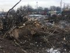
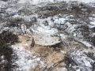
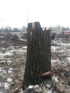

Страницы авторов "Тёмного леса"
Пишите нам! temnyjles@narod.ru


 На днях я получил по электронной почте несколько фотографий вырубленного леса в лесопарке "Кусково". Меня просили прокомментировать это событие.
Да, я с удивлением рассматривал фотографии и поначалу не поверил, что это в Кускове, а не где-нибудь рядом. Дело в том, что несколько лет назад я отошёл от природоохранной деятельности в Москве. Вскоре после выхода 2-го издания Красной книги города Москвы (в 2011 г.) нашу комиссию по Красной книге разогнали (точнее - заменили другими людьми, более сговорчивыми), а потом я вышел на пенсию и в своё удовольствие занялся флорой Дальнего Подмосковья. Вот так и получилось, что ничего не знал о кусковских проблемах. Позвонил знакомым биологам и узнал, что вырубили действительно в Кускове.
Как это комментировать? Эмоции и внутренние монологи оставим в стороне, так как от специалиста ждут чего-то конкретного. Суть случившегося в том, что в течении нескольких перестроечных и послеперестроечных десятилетий в Москве внутри МКАД не было вырублено ни одного гектара леса, если этот лес относился к Гослесфонду. Могли строить рядом с лесом, а мусор сваливать в лес. Могли строить на поляне в лесу, если эта поляна не относилась к Гослесфонду (например, там была избушка, а вырос небоскрёб). Могли портить лес под видом его улучшения. Но просто так не уничтожали. А теперь уничтожили. Впервые.
Я разузнал, что там прокладывают дорогу. Планировали её проложить вне леса (с другой стороны от железной дороги), но там были всякие важные постройки вроде сараев, гаражей и складов. Согласовать это дело со всеми собственниками не удавалось, работа застопорилась, и было принято "волевое решение". Права нескольких собственников оказались важнее прав всех остальных граждан (ведь Кусковский лесопарк - общенациональная собственность). Не будем осуждать городские власти за это решение: люди эти менее свободны, чем кто-либо из нас. Как приказано, так и сделано. Чего изволите... Значит, гражданское общество в таком состоянии, что с ним можно не считаться. Сами виноваты. И заметим: что гражданское общество - это не привычка к уличным беспорядкам под видом отстаивания демократических ценностей, а постоянный совместный созидательный труд большинства граждан. Это бесплатные кружки для школьников, приюты для бездомных, поддержка талантливых писателей... Если бы всё это было, то с нами бы считались и без митинговых страстей.
Чем опасна вырубка Кусковского леса. Что ж, спасибо, что дорогу будут строить по краю леса, а не по центру. Кусковский лесопарк отныне стал меньше, но сохранился. Москва остаётся уникальной европейской столицей, где лес и жилая застройка соседствуют друг с другом, почти соразмерны по площади, и пока мы не потеряли это преимущество перед другими городами. В общем, переживём и будем жить дальше. Опасно другое. Природоохранные традиции нашего города потерпели крах. Если можно расправиться с лесом в одном месте, то можно и в другом. Если это можно делать одному человеку, то можно и другим. Аппетит приходит с едой, и теперь я уже не могу сказать, что градостроительная ситуация в Москве внутри МКАД стабилизировалась. А ещё я слышал, что "кусочки" собираются откусывать от Воробьёвых гор, от Лосиного Острова... Может, и не так, но уже нет никакой уверенности, что за несколько десятилетий мы не лишимся Лосиного Острова, Битцевского леса и других территорий, которые в природном отношении, может быть, даже интереснее, чем лесопарк "Кусково".
Юрий Насимович, один из авторов и редакторов "Красной книги города Москвы".
Ю.Насимович. Очерк природы Кускова в Москве
Главная страница сайта
Страницы авторов "Темного леса"
Страницы Юрия Насимовича.
Последнее изменение страницы 10 Oct 2018